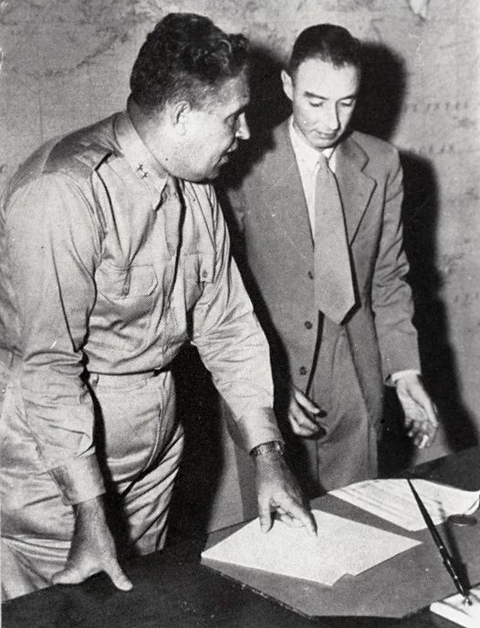
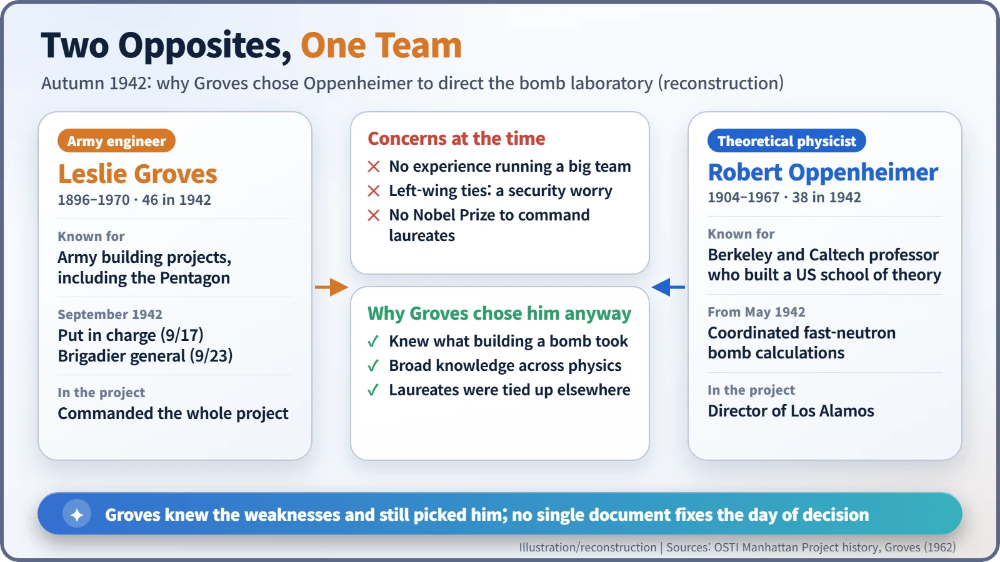
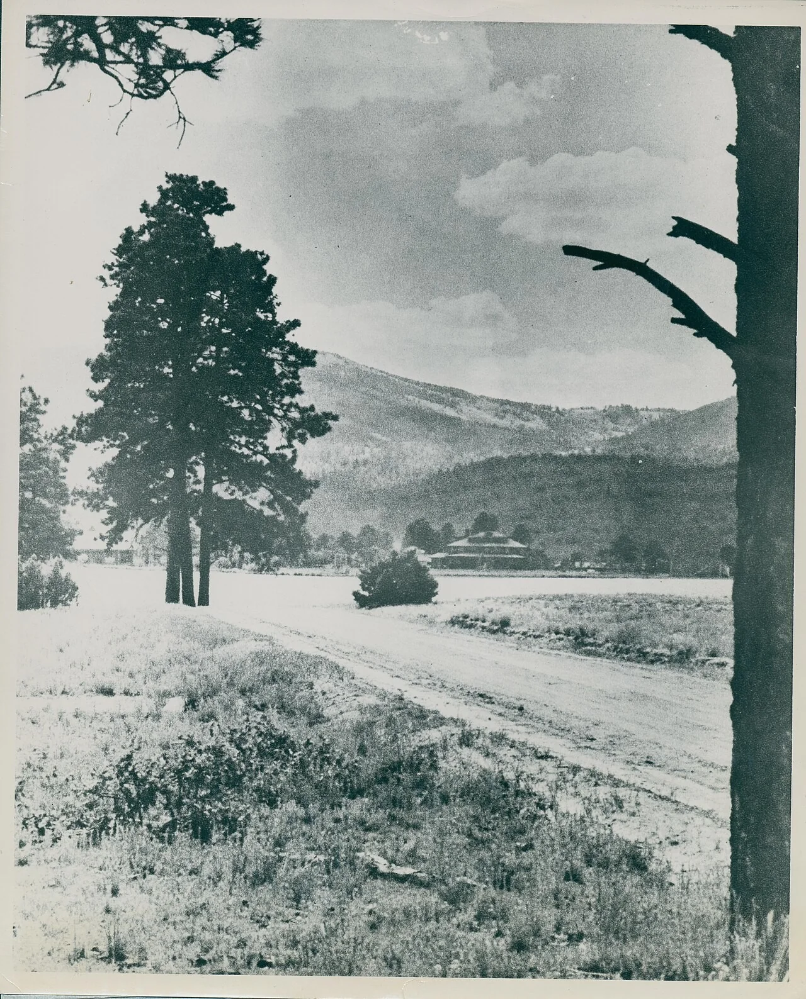
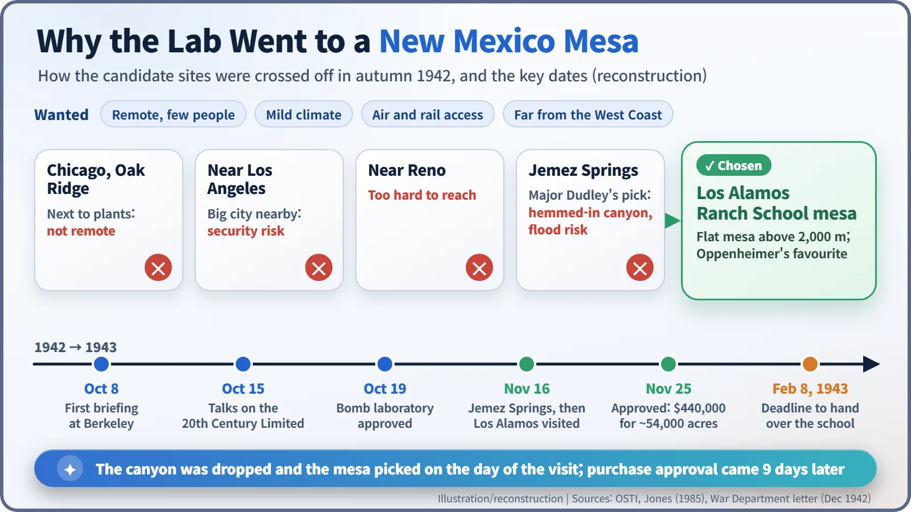
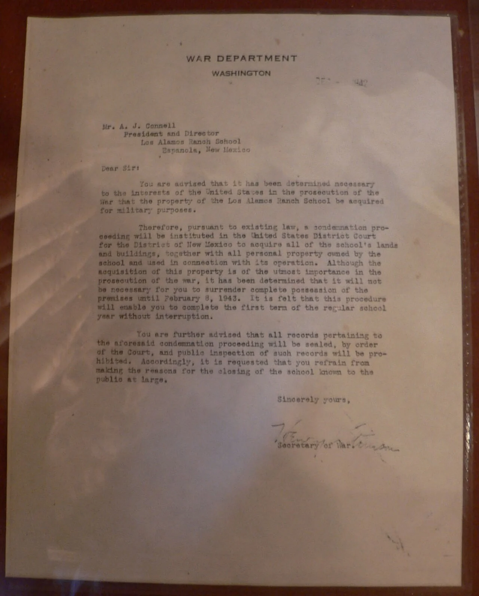

Nuclear History · 089
No Nobel, No Management Experience — Why Groves Picked Oppenheimer (1942)
He had no Nobel Prize and almost no management experience, yet after a train ride and a canyon that failed inspection, he got the job and the mesa.
In the autumn of 1942, General Leslie Groves chose J. Robert Oppenheimer, a 38-year-old Berkeley theorist with no Nobel Prize and almost no management experience, to lead the secret bomb laboratory. Within weeks the two men had also picked its home: a boys' ranch school on a New Mexico mesa, after a canyon site was rejected on the day of the visit.
Wanted: a director with none of the qualifications
Imagine a job advertisement: Director, top-secret laboratory. Duties: gather leading physicists and design a weapon nobody has ever built. Preferred: Nobel laureate, experience running a large organisation, spotless security record.
Had the US Army placed such an advertisement in the autumn of 1942, the successful candidate would have met none of the preferred criteria. He was J. Robert Oppenheimer (1904–1967), a 38-year-old theoretical physicist from Berkeley. The man who picked him was his opposite in almost every way: an Army engineer named Leslie R. Groves Jr. (1896–1970).

Scattered sums, one roof
Until the spring of 1942, American work on an atomic bomb was spread across several universities. The "bomb physics", the calculations of how fast neutrons could drive a chain reaction in a split second, had been led by Gregory Breit. After clashing with colleagues over security arrangements, Breit resigned on 18 May 1942. Arthur Compton in Chicago gave the job to Oppenheimer, whose official title was "Coordinator of Rapid Rupture". [6]
Oppenheimer soon reached a firm conclusion. Theorists and experimenters split between campuses, trading letters, would never get the answers in time. The work needed a central laboratory in an isolated place: sealed off from the outside world, but with ideas flowing freely inside. [1]
A job interview on the 20th Century Limited
Groves, put in charge of the whole project on 17 September 1942, was an Army engineer who had overseen huge construction jobs, the Pentagon among them. On 8 October he heard Oppenheimer brief him on bomb design at Berkeley, and he liked the idea of a central laboratory. On 15 October, after a meeting in Chicago, Groves had Oppenheimer board the 20th Century Limited, the express train to New York, so they could keep talking with Colonel James C. Marshall and Lieutenant Colonel Kenneth D. Nichols of the Manhattan Engineer District. A picture of four men squeezed into a tiny compartment comes from later recollections, so treat it as a story often told rather than a documented scene. On 19 October Groves approved setting up the bomb laboratory. [2] [6]

Three weaknesses, one decision
The doubts were loud. The US Department of Energy's official history lists three: Oppenheimer's lack of administrative experience, his left-wing sympathies and associations, and the absence of a Nobel Prize. Groves himself admitted in his 1962 memoir that "he had had almost no administrative experience of any kind, and he was not a Nobel Prize winner." Vannevar Bush, James Conant, Ernest Lawrence and Harold Urey are reported to have had reservations too. [1] [3] [4]
Groves saw something else. Oppenheimer grasped the practical problems of actually designing and building a bomb, and his knowledge ranged across almost all of physics. There was also a simple staffing fact: the Nobel laureates were already tied down. Lawrence was running uranium separation at Berkeley, Compton the reactor work in Chicago. According to one account, after Oppenheimer left the train the three officers could not think of anyone else for the job.
Still, no document pins down the exact day of the decision. It is fairest to say the choice was settled in practice by mid-October and formalised in stages afterwards. The security question dragged on into the next year. It was closed only on 20 July 1943, when Groves ordered that clearance be issued "without delay irrespective of the information which you have concerning Mr. Oppenheimer. He is absolutely essential to the project." [5]
A canyon rejected, a mesa chosen
Next came the question of where. The requirements were a remote, thinly populated spot, a mild climate, air and rail access, and distance from the West Coast in case of Japanese attack. Sites next to existing facilities in Chicago or Oak Ridge were not remote enough; one near Los Angeles was ruled out on security grounds, and one near Reno as too inaccessible. Oppenheimer pushed for New Mexico. He had first come to the Southwest to recover his health as a young man and fell for it. When he heard that a mountain ranch was available to lease, he exclaimed "Hot dog!", and he later named the place Perro Caliente, Spanish for "hot dog". [4] [6]
After touring sites in October, Major John H. Dudley, an Army engineer, recommended Jemez Springs. On 16 November 1942, Oppenheimer, Groves and Dudley went to look. It was a deep canyon. Oppenheimer found the surrounding cliffs claustrophobic, and the engineers worried about flooding. The party drove on to a nearby boys' boarding school on top of a mesa, a flat-topped plateau more than 2,000 metres above sea level: the Los Alamos Ranch School. A story often told says Groves made up his mind after seeing pupils exercising in shorts in the cold, but it rests on later recollections. Nine days later, on 25 November, Under Secretary of War Robert P. Patterson approved buying the land: about 54,000 acres, with a budget of $440,000. [6]


"Refrain from making the reasons known"
In December 1942 the school's director, A. J. Connell, received a letter over the name of Secretary of War Henry L. Stimson. The school's property, it said, would be acquired "for military purposes". So that the boys could finish the first term, the school did not have to give up the premises until 8 February 1943. The court records would be sealed, and Connell was asked to "refrain from making the reasons for the closing of the school known to the public at large". The school handed out its last diplomas in January 1943. [7] [8]

An odd couple that worked
A hard-driving builder and a reflective theorist: each covered the other's weak spots. That partnership became the engine of the secret laboratory on the mesa. The physicist Isidor Rabi later called the appointment "a real stroke of genius on the part of General Groves". [4]